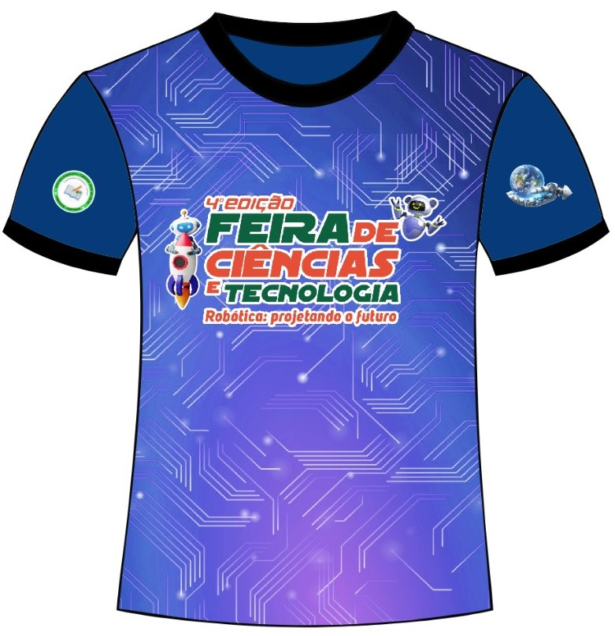

O que é Tecnologia Assistiva?
Tecnologia assistiva define recursos que ampliam as habilidades funcionais de pessoas com deficiência, promovendo inclusão e independência.
Por que incluir pessoas com deficiência visual?
Mais de 6,5 milhões de brasileiros possuem deficiência visual. A inclusão garante cidadania, combate o preconceito e valoriza a diversidade.
Como a Robótica pode ajudar?
Com Arduino, sensores e atuadores, é possível criar bengalas inteligentes e dispositivos que auxiliam deficientes visuais na locomoção e segurança.
Galeria de Fotos



Projeto com Arduino Uno
Objetivo: Desenvolver um dispositivo que ajude pessoas com deficiência visual a se deslocarem por ambientes internos, utilizando sensores para detectar obstáculos e fornecer feedback auditivo em tempo real.
Materiais necessários:
- Arduino Uno
- Sensor ultrassônico (HC-SR04)
- Buzzer ou speaker
- Fios de conexão
- Protoboard/placa de ensaio
- Alimentação (bateria ou fonte de 9V)
- Fita métrica
- Caixa ou suporte para os componentes
Como funciona o projeto:
- Detecção de obstáculos: O sensor ultrassônico calcula a distância até objetos à frente.
- Feedback sonoro:
- Som contínuo: obstáculo muito próximo (menos de 30 cm)
- Som intermitente: distância intermediária (30 cm - 1 m)
- Silêncio ou som leve: caminho livre (mais de 1 m)
- Funcionamento: O usuário transporta o dispositivo, que ajuda na navegação por sons adaptativos.
Passo a passo da montagem:
- Conecte o sensor ultrassônico ao Arduino (VCC no 5V, GND no GND, Trig no pino 9 e Echo no pino 10)
- Conecte o buzzer ao pino 3 do Arduino
- Use a protoboard para organizar as conexões